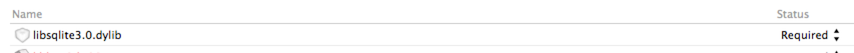
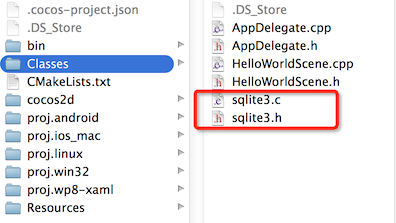
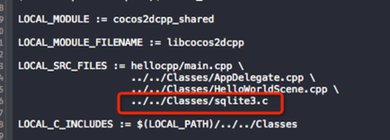

在Cocos2d-x中，简单数据存储，可以使用UserDefault。那么如何存储大量，不规则的数据？我们可以使用SQLite数据库存储数据。SQLite是使用非常广泛的嵌入式数据库，它有小巧 、高效、跨平台、开源免费和易操作的特点。
SQLite数据库是使用C语言来编写的，那么在Cocos2d-x使用SQLite也是得心应手。
首先创建一个Cocos2d-x v3.x的helloworld工程，我们将以该工程作为SQLite集成与用法的实战工程。
打开终端，使用如下命令新建工程：
cocos new HelloWorld -p com.your_company.HelloWorld -l cpp
按照上面的操作，我们新建了一个Cocos2d-x v3.x的HelloWorld工程。
iOS/Mac的系统库自带sqlite库,我们只需添加libsqlite3.0.dylib库即可。

Android系统没有自带sqlite库，我们需要手动添加。
1.下载sqlite包
下载地址：http://www.sqlite.org/download.html 下载后，在项目中导入sqlite3.c和sqlite3.h两个文件即可。
2.导入到工程

3.修改Android.mk

打开HelloWorldScene.cpp文件，我们在里面加入SQLite的使用示例
引入头文件
#include "sqlite3.h" sqlite3 *pdb=NULL;//1
std::string path= FileUtils::getInstance()->getWritablePath()+"save.db";//2
std::string sql;
int result;
result=sqlite3_open(path.c_str(),&pdb);//3
if(result!=SQLITE_OK)
{
log("open database failed, number%d",result);
} sql="create table student(ID integer primary key autoincrement,name text,sex text)";//1 result=sqlite3_exec(pdb,sql.c_str(),NULL,NULL,NULL);//1
if(result!=SQLITE_OK)
log("create table failed"); sql="insert into student values(1,'student1','male')";
result=sqlite3_exec(pdb,sql.c_str(),NULL,NULL,NULL);
if(result!=SQLITE_OK)
log("insert data failed!");
sql="insert into student values(2,'student2','female')";
result=sqlite3_exec(pdb,sql.c_str(),NULL,NULL,NULL);
if(result!=SQLITE_OK)
log("insert data failed!");
sql="insert into student values(3,'student3','male')";
result=sqlite3_exec(pdb,sql.c_str(),NULL,NULL,NULL);
if(result!=SQLITE_OK)
log("insert data failed!");
char **re;//查询结果
int r,c;//行、列
sqlite3_get_table(pdb,"select * from student",&re,&r,&c,NULL);//1
log("row is %d,column is %d",r,c);
for(int i=1;i<=r;i++)//2
{
for(int j=0;j<c;j++)
{
log("%s",re[i*c+j]);
}
}
sqlite3_free_table(re);查询结果：
cocos2d: row is 3,column is 3
cocos2d: 1
cocos2d: student1
cocos2d: male
cocos2d: 2
cocos2d: student2
cocos2d: female
cocos2d: 3
cocos2d: student3
cocos2d: male我们可以看到查询到结果和我们前面插入的数据一样。
sql="delete from student where ID=1";
result=sqlite3_exec(pdb,sql.c_str(), NULL,NULL,NULL);//1
if(result!=SQLITE_OK)
log("delete data failed!");使用上面的查询语句查询删除ID=1的学生后的数据
查询结果：
cocos2d: row is 2,column is 3
cocos2d: 2
cocos2d: student2
cocos2d: female
cocos2d: 3
cocos2d: student3
cocos2d: male我们可以看到，表中ID=1的数据已经被删除了
使用sqlite一定要注意的内存管理问题，那就是打开数据库之后，数据操作完成之后，一定要关闭数据库，否侧会造成内存泄漏。
sqlite3_close(pdb); /data/data/com.youCompany.Helloworld/files/save.db位于程序沙盒的文档目录下
../Documents/save.db